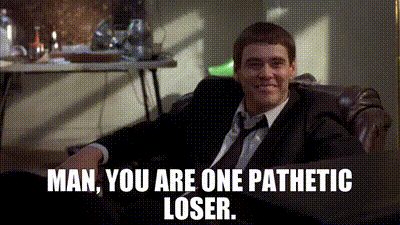
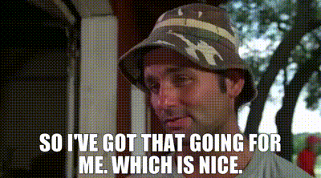
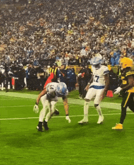
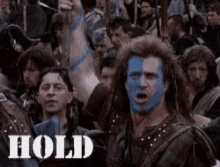

Weekly Debrief
Published every Tuesday because Monday you're all still crying
Week 7 Standings
Pulled from the league API: AFC and NFC divisions, in the order ESPN ranks them. Playoff odds aren't part of that feed, so they're off the board for now.
| Rk | AFC | Record | PF | PA | Streak | Moves |
|---|---|---|---|---|---|---|
| 1 | Nabers ate my Zombies | 5-2-0 | 1731.6 | 1558.3 | L1 | 12 |
| 2 | Covfefe is for Closers | 4-3-0 | 1801.4 | 1734.5 | W1 | 8 |
| 3 | MaHOMELANDER | 3-4-0 | 1907.2 | 1809.6 | L1 | 1 |
| 4 | Hurt Me Moore | 3-4-0 | 1667.7 | 1716.8 | W1 | 20 |
| 5 | Waddle On Deez Nuts | 3-4-0 | 1642.7 | 1666.4 | W1 | 2 |
| Rk | NFC | Record | PF | PA | Streak | Moves |
|---|---|---|---|---|---|---|
| 1 | Hellen Keller's Dodgeball Squad | 5-2-0 | 1629.5 | 1483.7 | W4 | 21 |
| 2 | Catchy Football Name | 4-3-0 | 1599.5 | 1617.8 | W3 | 2 |
| 3 | Donuts All Day 24/7 | 3-4-0 | 1561.2 | 1506.8 | L1 | 3 |
| 4 | Kenz VishusLicks | 3-4-0 | 1586.9 | 1751.4 | L3 | 9 |
| 5 | Texas Determined Domination | 2-5-0 | 1466.9 | 1749.2 | L4 | 7 |
Ryan and JJ are tied at 5-2. Ryan has won four straight and JJ's four-game winning streak ended this week. David and McCarty are 4-3, five teams are 3-4 (MaHOMELANDER, Hurt Me Moore, Donuts, Waddle, and Kenz), and Texas Determined Domination is 2-5 and has lost four in a row. MaHOMELANDER leads the league in points scored (1,907.2) and has also allowed the most (1,809.6), and he has made one waiver move all season. Hellen Keller's has made 21, the most in the league, and Hurt Me Moore is next with 20.
Week 7 Recap
The closest game was decided by 0.55 points and the biggest by 39.65. Last week's preview leaned the right way in four of five games.
Projected: 267.0 – 270.0
McCarty won by 0.55, the closest game of the week, and Kevin's 252.05 was the second-highest score in the league. He lost with 108.4 on his bench, also the most in the league. Tony Pollard scored 48.0 on the bench on a 22.63 projection, the third-highest score of the week, while Patrick Mahomes scored 16.45 at OP. KC Concepcion added 30.95 on the bench. Swap Pollard for Mahomes and Kevin wins by 31.0, and Pollard outscored every starter Kevin had. Bucky Irving (36.5), Brock Purdy (33.75 on a 41.66 projection), Christian McCaffrey (28.0), Jaylen Warren (27.2), Ashton Jeanty (26.6), and Jonathan Taylor (26.25) did the work, and Matthew Golden scored 13.4 on 21.31. It's almost as if the fantasy gods hate Kevin - he's running away with the 'points against' while still holding the most points scored. Scheduling matters, and sometimes you just get fucked in half by chance. Like I said, I called it, but I have to admit it was shocking to see such a small margin of victory. Don't bank on Pollard bailing you out this week (or any week for that matter); this is a hard loss to swallow, but we all know Kevin is good at swallowing...

Projected: 223.1 – 229.1
Lucas beat his projection by 16.68 and won by 17.5. This was an ugly game for Ken as he saw the stud K9 get shut down by the vaunted dark side defense that also shut down Patrick Mahomes. Captain Kirk and Stafford both had good games, but the middle of Ken's lineup is week and he desperately needs depth. Lucas saw basically everyone hit or get close to their projection, which is nice to see, but not common for this lineup. Congrats on this win, the AFC is the toughest division in this league and you need all the help you can get.

Projected: 265.3 – 216.0
David won by 39.65, the biggest margin of the week, and that number is exactly what his bench scored: Devaughn Vele (19.65), the Browns D/ST (19.5), and Kalif Raymond (0.5). David missed his projection by 25.23 and still won. Jaxon Smith-Njigba scored 39.8, Tyler Shough scored 36.5, Jordan Love scored 35.25 at OP on 42.13, the Vikings D/ST scored 26.5, Colston Loveland scored 24.9 on 14.33, and Ja'Marr Chase scored 20.95. Derrick Henry scored 11.65 on a 27.09 projection, J.K. Dobbins scored 10.3 on 20.52, and Germie Bernard, the $17 claim, scored 7.45 on 16.98. Caleb Williams scored 44.1 in David's IR slot, where it doesn't count, for the second week in a row (39.4 last week). ESPN lists him active, and at OP instead of Love that's 8.85 more. Kolby lost his fourth straight and is 2-5 with the lowest points total in the league (1,466.85). Both teams are dealing with injuries, perhaps Breece Hall and Jeremiyah Love provide a lift to Covfefe next week. Kolby needs depth in a bad way, with the recent loss of McLaurin and with old man Aaron Jones sustaining a late injury against Indy. Perhaps Rashee Rice will be back this week, but even with that, this roster is anemic.

Projected: 254.9 – 176.2
Joy just narrowly avoided a catastrophic loss to a team with major pieces on BYE. Who expected Tampa Bay to dunk all over Carolina? Apparently nobody, because the bets this week were almost all for the undefeated teams... Joy got a late lift from Goff and the sun god dinking and dunking Green Bay to death (9 for 153 yards), and the choice to play Tyler Higbee over Emanuel Wilson is a real head scratcher, considering Wilson went off for 27 and had a much higher projection. Maybe Joy should look at having Chat GPT manage his lineup? (haha).

Projected: 219.7 – 242.3
I fucking knew Ryan would go snag a QB and sneak out a win - his tricksy ways know no bounds. JJ must have sensed it was coming when the afternoon window closed and it was still close (with Ryan leaving a flex spot effectively unoccupied and Saquon on the bench with a projected 22.2 points). Anyone who has seen Ryan play over the previous years knows this play - wait for the waiver to clear on Monday and snag a player, just to grab them back on Tuesday. Congrats on the win you tricksy hobbit.

Week 8 Preview
Projections as of Thursday morning, per ESPN, before Thursday night's game. Several lineups aren't set, and these numbers will move. The Giants, Saints, 49ers, and Texans are on a bye. Check your lineups before kickoff.
Projected: 238.72 – 227.18
Joydip is an 11.54-point favorite. Bryce Young (36.36) is at QB, Jared Goff (34.15) is at OP, Bijan Robinson (28.21) and Chuba Hubbard (23.36) are at RB, and Amon-Ra St. Brown (22.65) and DJ Moore (17.31) are both questionable. On Wednesday he spent $41 on four claims: Caleb Douglas ($16) starts at 11.45, and Jonah Coleman ($20, 11.7), Hunter Henry ($1, 12.97), and Chig Okonkwo ($4, 10.49) are all on his bench, so $25 of it is sitting there. Nico Collins and Kendre Miller are on a bye on the bench, and the Packers D/ST (16.85) and Emanuel Wilson (13.38) are on it too. Kolby has Joe Burrow (45.38), Sam Darnold (33.18) at OP, CeeDee Lamb (25.01), and Josh Jacobs (22.36), and Rashee Rice, Emeka Egbuka, and Aaron Jones Sr. are all questionable and in his lineup. He has lost four straight. Lean: Hurt Me Moore.

Projected: 263.17 – 237.96
Ryan has the highest projection in the league and is a 25.21-point favorite. He is starting both quarterbacks: Trevor Lawrence (41.2) is back from his bye at QB and Jayden Daniels (42.87) is at OP, and Daniels is the player Ryan paid $121 for on Wednesday after dropping him on Monday. Zay Flowers (25.58), Chase Brown (24.89), Drake London (23.1), and Ollie Gordon II (22.25) fill in around them, and Saquon Barkley (20.7) is questionable. Kevin has Patrick Mahomes (31.44) at QB, Bucky Irving (26.02), Jonathan Taylor (24.4), Ashton Jeanty (24.11), and Jaylen Warren (23.74), and Tony Pollard (22.21) is finally in a starting spot at OP. Christian McCaffrey and Brock Purdy are both on 49ers byes and sit on his bench, and A.J. Brown, Matthew Golden, and Carnell Tate are all questionable. Lean: Hellen Keller's Dodgeball Squad.
Projected: 185.49 – 242.38
The widest gap of the week, 56.89 points. Lucas has Chris Olave (Saints) and George Kittle (49ers) on byes at 0.0 in his lineup while Bhayshul Tuten (22.4), Rachaad White (18.08), and the Lions D/ST (17.49) sit on the bench. Lamar Jackson, questionable and still in the IR slot, is projected for 43.1 and can't score there. Dak Prescott (40.03), Deshaun Watson (29.43) at OP, and Puka Nacua (28.28) lead what's there. McCarty has Drake Maye (47.96) at OP, Kyler Murray (37.19) at QB, Javonte Williams (29.02), Justin Jefferson (22.54), and the Steelers D/ST (20.05). Brock Bowers (20.3) and Braelon Allen (14.74) are questionable. Woody Marks is on a Texans bye in a flex spot at 0.0 while Zach Charbonnet (15.94, questionable), Tyler Warren (14.8, questionable), and Tucker Kraft (13.85) sit on his bench. Lean: Catchy Football Name.
Projected: 220.48 – 221.84
The closest game on the board, with Kenz 1.36 points ahead as set. David's lineup is the reason it's this close: J.K. Dobbins (9.88) is at OP while Caleb Williams, listed active at 33.83, sits in the IR slot where he can't score. That swap alone adds 23.95. Breece Hall (22.68), Jeremiyah Love (17.74), and the Browns D/ST (17.98) are on the bench, and Hall and Love are both questionable. Tyler Shough and Devaughn Vele are on byes. Jordan Love (36.38) is at QB, Derrick Henry (27.61) and Jaxon Smith-Njigba (27.55) lead the rest, and Ja'Marr Chase (26.54) is questionable. Kenz has Matthew Stafford (37.32) at QB, Kirk Cousins (36.14) at OP, Kenneth Walker III (29.0), Tetairoa McMillan (19.8), Tee Higgins (19.03), and the Jaguars D/ST (18.27). He dropped Mike Washington Jr. for Kimani Vidal ($3), who starts at 11.99, and his Texans D/ST and Marvin Harrison Jr. are on byes on the bench. Lean: Covfefe is for Closers, if the lineup gets fixed. As it stands, it's Kenz by 1.36.
Projected: 131.1 – 146.02
These are the two lowest projections of the week. JJ has C.J. Stroud (Texans), Cam Skattebo (Giants), and Malik Nabers (Giants) on byes in his lineup, and Roschon Johnson and Bam Knight, both active, are projected for 0.0. Jahmyr Gibbs (36.08, questionable), Aaron Rodgers (32.68), and Trey McBride (22.4) carry what's left, and DeVonta Smith (19.19, questionable), the Rams D/ST (18.41), and Stefon Diggs (15.7, questionable) are on his bench. Alby hasn't set his lineup. The 49ers D/ST, Kaelon Black, and Dalton Schultz are all on byes in it at 0.0, and Josh Allen (44.74), James Cook III (27.95), Parker Washington (20.13), and the Cowboys D/ST (17.15) are on the bench. Jacoby Brissett (35.2) is at QB with Jameson Williams (13.94) at OP, and Kyren Williams (25.49) and Blake Corum (17.28) are in as well. Lean: Donuts All Day 24/7.
League Business
- Standings update:Ryan and JJ are tied atop at 5-2, David and McCarty are 4-3, five teams are 3-4, and Kolby is 2-5. Full AFC/NFC tables above.
- Waiver wire watch:Best claims of the week: Ryan's Tanner McKee ($1) scored 26.6 at QB for him. Joydip's Omar Cooper Jr. ($1) scored 26.25, but on his bench. Alby's Kaelon Black ($1) scored 15.65 and JJ's Bam Knight ($2) scored 13.3. Worst: Kenz's $4 for Mike Washington Jr. scored 4.95 on his bench. Newest moves since Friday: Ryan dropped Jayden Daniels on Monday and claimed McKee, dropped Dameon Pierce, then dropped McKee on Wednesday and paid $121 to get Daniels back, the biggest bid in the log by a wide margin. Joydip spent $41 on Wednesday: Jonah Coleman ($20, dropping Tyrone Tracy Jr.), Caleb Douglas ($16, dropping Malik Washington), Chig Okonkwo ($4, dropping Tyler Higbee), and Hunter Henry ($1, dropping Juwan Johnson). JJ paid $2 for Bam Knight on Sunday. Kenz paid $3 for Kimani Vidal on Thursday, dropping Mike Washington Jr. again.
- Trade report:Three-game scorecard on the Oct. 7 David-Ryan trade: Ryan's players scored 207.25 (69.1 in Week 5, 83.85 in Week 6, 54.3 this week with Flowers at 34.95 and Barkley at 19.35, Lawrence on a bye, and Doubs dropped). Counting Jordan Love, who David claimed after dropping Bo Nix, David's side scored 196.2 (90.3, 59.0, then 46.9 from Love at 35.25 and Henry at 11.65). Devaughn Vele scored 19.65 on David's bench and isn't counted. That's 11.05 points apart. The Oct. 1 trade: Javonte Williams and DK Metcalf scored 42.35 for McCarty this week, and Drake London scored 24.1 for Ryan.
- Injury watch:Per ESPN's designations on Thursday morning, nobody is listed out. Terry McLaurin is on IR. Questionable: Rashee Rice, Emeka Egbuka, Aaron Jones Sr., Dalton Kincaid, and Brian Robinson Jr. (Texas Determined Domination); Amon-Ra St. Brown, DJ Moore, and Deebo Samuel Sr. (Hurt Me Moore); Christian McCaffrey, A.J. Brown, Carnell Tate, and Matthew Golden (MaHOMELANDER); Saquon Barkley, Dontayvion Wicks, and David Montgomery (Hellen Keller's); Brock Bowers, Braelon Allen, Tyler Warren, Kenny Gainwell, Kyle Monangai, and Zach Charbonnet (Catchy); Ja'Marr Chase, Breece Hall, and Jeremiyah Love (Covfefe); Jakobi Meyers and Tyler Allgeier (Kenz); Jahmyr Gibbs, Cam Skattebo, DeVonta Smith, Mike Evans, and Stefon Diggs (Nabers); George Pickens, Michael Wilson, Rashid Shaheed, and Ladd McConkey (Donuts); and Lamar Jackson, Jaylen Waddle, and Calvin Ridley (Waddle).
- Optimizer watch:No new optimizers this week: every team's total matches its starters to the decimal. Three are still spent (David in Week 1, Kevin and Joydip in Week 4).
- Reminder:[lock times, dues, punishment tracker]